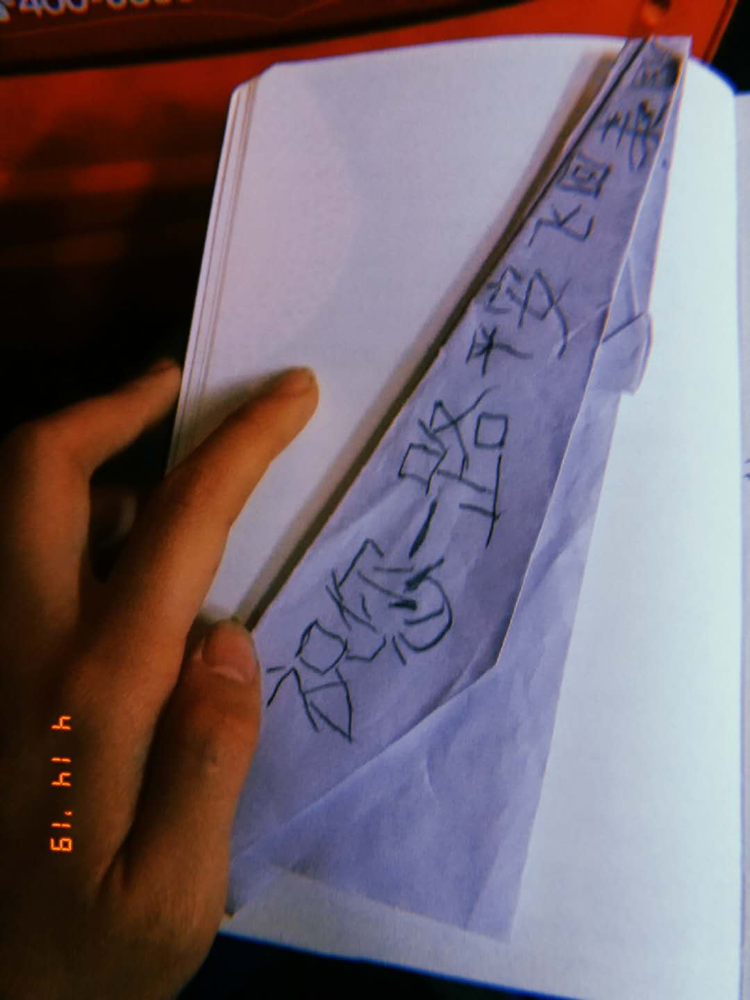

Tweets Post-China
April 25th, 2019 11:10 PM
Some thoughts + updates from today that I wanted to post on Twitter, but, too much of a hassle:
1. I've got a part-time job! The fact that I am paid now means that I can support my favorite creators on Patreon :)
(Haven't gotten to this yet. I will fix that soon.)
2. I've been gone for the last two months to volunteer at a special needs center in China. I'm hoping (hoping) to write a few essays on the design of the program (not purely voluntourism?), special needs in China, and my own personal experience as a volunteer.
3. This afternoon:
4. Working a part-time job where I am standing + constantly in motion seems to enhance my productivity. It distracts from my fatigue + creates a momentum where I want to continue working on other projects.
Wanted to tweet because I was unsually productive today. Plus, it was just a good day. I'm pretty happy.
A gift from one of the special needs kids, from my last day in China. He folded me a plane because I was flying back to America. (Hahahaha, get it?)
Given the chance, I will definitely fly back.